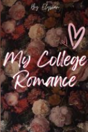

My College Romance
Author: elysiansugar
Genre: Romance
A nervous first-year college student faces an unexpected challenge on her first day. Memories of school and her experiences as an invisible, lonely student return as her class prepares to choose a representative.
Episode 1 - First Day
I stood up before my brain could process what my body was doing. Today was my first day in college, and our assistant professor announced that we would select a class representative. As the class began to murmur, memories of my school days returned in a flash.
Read Story